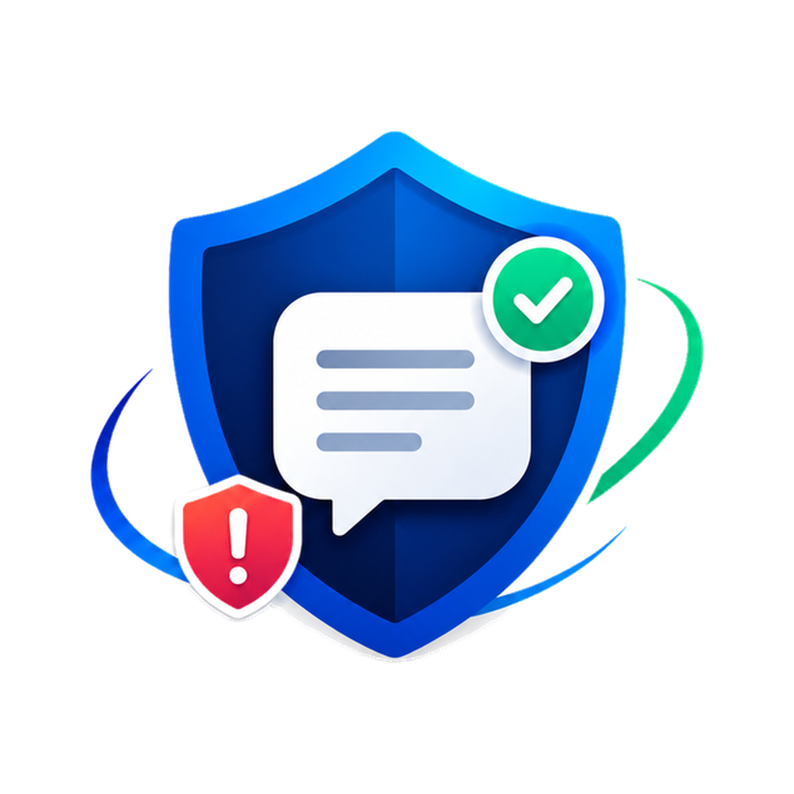
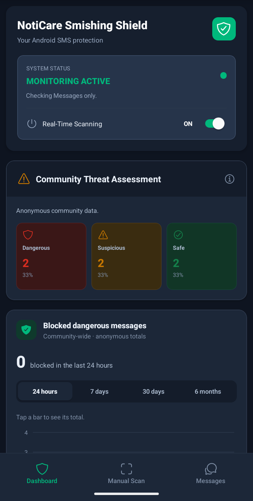

Scan on your phone
Paste a message or photograph it for an on-device check. Photos are not uploaded during a scan.

NotiCare Download appA more thoughtful way to check suspicious texts
Get a second opinion on suspicious messages. NotiCare checks for common scam warning signs on your Android phone.

A clearer way to check
Check a message for common scam warning signs before deciding what to do. NotiCare offers a useful tool.
Paste a message or photograph it for an on-device check. Photos are not uploaded during a scan.
See a risk level and the warning signs found, such as urgent language or a suspicious link.
Optional scanning checks notifications from your default Messages app when you enable Android Notification Access.
A closer look
Explore the dashboard and manual scan. See the information NotiCare provides.
How your information is handledYour protection at a glance
Check monitoring status and review anonymous community risk totals.
Select a screen to preview the app.
Privacy, explained
Manual scans are analyzed on your device. Photos and message text are not sent during a scan. If you choose Report, that message is shared with the community. Real-time scanning checks notifications from your default Messages app only after you turn it on.
NotiCare does not read your SMS inbox or delete SMS messages. When Android allows a dangerous notification to be suppressed, the original SMS remains in Messages.
Read the full Privacy PolicyGood to know
Details about installing NotiCare, message privacy, and Android notification access.
Download the APK on your Android phone, open the completed download, and follow Android's prompts.
Android may ask you to allow your browser or file manager to install apps. Only allow this for a source you trust. You can turn the permission off again in Android settings.
Photos and message text stay on your device during a scan. If you choose Report, the selected message is shared to help warn other users. Anonymous scan classifications can also support community statistics.
Android requires this permission so NotiCare can check notifications from your device's default Messages app. Scanning is optional and can be turned off in the app or in Android settings.
No. If Android allows NotiCare to suppress a dangerous notification, the SMS itself remains in your Messages inbox.
NotiCare for Android
Download NotiCare for Android and review suspicious messages with more context.
After downloading, open the APK on your Android phone to begin installation.
Android may ask you to allow installs from your browser. Only install apps from sources you trust. Scam detection is not perfect. Never share a password, PIN, or one-time code because a message looks safe.